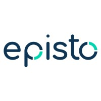
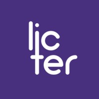
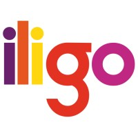
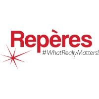

Le seul outil de prospection dédié au market research.
Vos prochains clients sont déjà sur mazeo.
La bonne entreprise, la bonne personne, au bon moment.
Découvrir mazeo en vidéoFermer la vidéo




Tout le secteur, cartographié.
Vos clients potentiels, vos concurrents et vos partenaires, réunis sur une seule carte.
Tout le secteur du market research en France. D’autres pays à venir.
Chaque entreprise, scorée par des professionnels du métier.
Toutes les entreprises du secteur sont scorées sur les trois mêmes axes : domaines, méthodes, secteurs.
Grâce à ce score, mazeo vous recommande les entreprises qui ont besoin de votre offre.
La bonne entreprise
et la bonne personne,
recommandées
pour vous.
mazeo comprend votre offre et ce qui vous distingue, puis identifie les entreprises qui en ont le plus besoin, classées par score.
Dans chaque entreprise, mazeo vous indique qui contacter, et pourquoi. Leur email et leur portable s’affichent en un clic.
Le bon moment, signalé pour vous.
mazeo scanne le secteur en continu. Dix types de signaux vous disent quand écrire à une entreprise, et pourquoi.
La Watch. Suivez les entreprises et les personnes qui comptent pour vous. Chaque mercredi, un email résume leurs signaux de la semaine.
Le rendez-vous, obtenu étape par étape.
Pensé pour notre métier, le Pipeline vous guide du premier contact jusqu’au rendez-vous.
Chaque étape vous est suggérée au bon moment, avec une alerte en cas de retard.
Il écrit. Vous relisez, vous envoyez.
Le rédacteur écrit vos messages à chaque étape : premier contact, relances, proposition de rendez-vous. Il a tout le contexte de votre relation, et il connaît le parcours de la personne à qui vous écrivez : son poste, son entreprise, ses signaux. Sur un ton formel, direct ou amical.
En bêta privée depuis mars 2026 chez 9 prestataires d’études.
« J’ai une concentration d’informations structurées, fiables, à un seul endroit. À l’usage, c’est un véritable gain de temps. »
« En deux semaines, mazeo nous a fait découvrir une vingtaine d’instituts qu’on n’avait jamais contactés. Pour chacun, on savait qui appeler. »
« Les signaux changent tout : on écrit quand il se passe quelque chose chez le client, pas au hasard. »
Conçu pour les commerciaux, les directeurs d’études, les fondateurs et les dirigeants du market research.
Les questions qu’on nous pose.
D’où viennent les données ?
Quelle différence avec LinkedIn Sales Navigator ?
Qui envoie les messages ?
Comment y accéder ?
Vos prochains clients sont déjà sur mazeo.
Bêta privée. Demandez un accès, nous revenons vers vous.